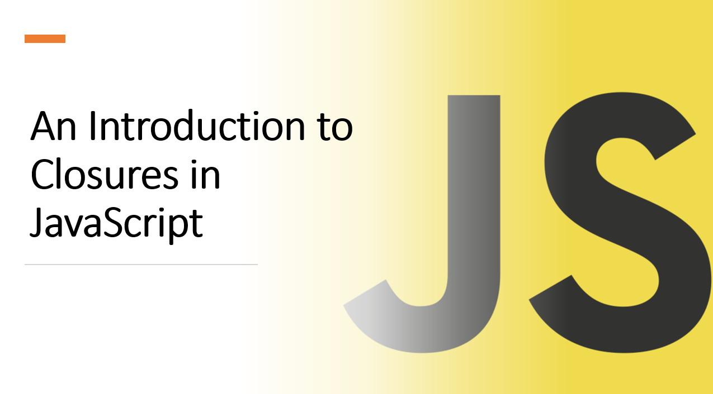

Introduction​
Closures are a fundamental concept in JavaScript that play a significant role in enabling powerful and flexible programming patterns. Understanding closures is crucial for writing efficient, modular, and maintainable code.
In this blog article, we'll introduce you to closures, explain how they work, and demonstrate their practical applications.
1. What is a Closure?​
A closure is a function that has access to its outer function's scope, even after the outer function has returned. This means that a closure can access variables and functions defined outside of its scope.
Let's look at an example of a closure in action:
function outerFunction() {
const outerVariable = 'I am outside!';
function innerFunction() {
console.log(outerVariable);
}
return innerFunction;
}
const innerFunc = outerFunction();
innerFunc();
Suggested Tutorials 📑:​
1.1 How do Closures Work?​
In the example above, we have an outer function called outerFunction that returns an inner function called innerFunction.
When we call outerFunction, it returns innerFunction, which we assign to the variable innerFunc.
We then call innerFunc, which logs the value of outerVariable to the console.
2. Lexical Scope​
Closures rely on lexical scope, which means that a function can access variables from its outer (enclosing) function.
function outer() {
const outerVar = 'I am from outer';
function inner() {
console.log(outerVar);
}
return inner;
}
const closureFunc = outer();
closureFunc();
In the example above:
- The inner function
inner has access to the variable outerVar from the enclosing function outer. This is because inner is defined inside outer.
3. Preserving State​
Closures are often used to preserve the state of variables across multiple function calls.
function counter() {
let count = 0;
return function() {
return count++;
};
}
const increment = counter();
console.log(increment());
console.log(increment());
In the example above:
- The function
counter returns an inner function that increments the variable count by 1 each time it is called. - The variable
count is preserved across multiple function calls because it is defined in the outer function counter.
Suggested Tutorials 📑:​
4. Private Variables​
Closures enable the creation of private variables, which are inaccessible from outside the function.
function createCounter() {
let count = 0;
return {
increment: function() {
count++;
},
getCount: function() {
return count;
}
};
}
const counter = createCounter();
counter.increment();
console.log(counter.getCount());
In the example above:
- The function
createCounter returns an object with two methods: increment and getCount. - The variable
count is inaccessible from outside the function createCounter, so it is private. - The methods
increment and getCount have access to the private variable count because they are defined inside the function createCounter.
6. Memory Management​
Closures can impact memory management. Unintentional closures (e.g., in loops) can lead to memory leaks.
function createTimers() {
const timers = [];
for (let i = 0; i < 5; i++) {
timers.push(function() {
console.log(i);
});
}
return timers;
}
const myTimers = createTimers();
myTimers[0]();
In the example above:
- The function
createTimers returns an array of functions that log the value of i to the console. - The variable
i is defined in the outer function createTimers. - When we call
createTimers, it returns an array of functions that log the value of i to the console. - When we call
myTimers[0], it logs the value of i to the console. However, the value of i is 5, which is unexpected behavior. - This is because the variable
i is defined in the outer function createTimers, so it is accessible from the inner functions.
Suggested Tutorials 📑:​
7. Practical Applications​
Closures are used in many popular JavaScript libraries and frameworks, including React, Redux, and jQuery.
7.1 React​
React uses closures to preserve the state of variables across multiple function calls.
function Counter() {
const [count, setCount] = useState(0);
function increment() {
setCount(count + 1);
}
return (
<div>
<p>Count: {count}</p>
<button onClick={increment}>Increment</button>
</div>
);
}
In the example above:
- The function
Counter returns a component that displays a count and a button. - The variable
count is preserved across multiple function calls because it is defined in the outer function Counter. - The function
increment has access to the variable count because it is defined inside the function Counter.
7.2 Redux​
Redux uses closures to preserve the state of variables across multiple function calls.
function counter(state = 0, action) {
switch (action.type) {
case 'INCREMENT':
return state + 1;
default:
return state;
}
}
In the example above:
- The function
counter returns a new state based on the current state and the action type. - The variable
state is preserved across multiple function calls because it is defined in the outer function counter. - The function
counter has access to the variable state because it is defined inside the function counter.
7.3 jQuery​
jQuery uses closures to preserve the state of variables across multiple function calls.
function createCounter() {
let count = 0;
return {
increment: function() {
count++;
},
getCount: function() {
return count;
}
};
}
const counter = createCounter();
counter.increment();
console.log(counter.getCount());
In the example above:
- The function
createCounter returns an object with two methods: increment and getCount. - The variable
count is preserved across multiple function calls because it is defined in the outer function createCounter. - The methods
increment and getCount have access to the variable count because they are defined inside the function createCounter.
Suggested Tutorials 📑:​
Conclusion​
Closures are a powerful feature of JavaScript that allow functions to "remember" their surrounding context. They enable the creation of private variables, maintain state across function calls, and facilitate modular and organized code. However, closures can also lead to unintended consequences if not used carefully, such as memory leaks. By understanding how closures work and where to apply them, you can harness their potential to create more efficient, expressive, and functional JavaScript code. As you continue to explore JavaScript, dive deeper into closures to leverage their benefits and avoid common pitfalls.
We hope you enjoyed this article!
Happy Coding ❤️